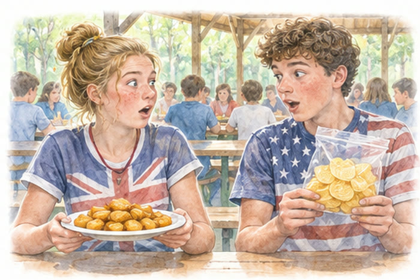

Listen to the text
Speed:

Emily is from London, and Jake is from Texas. They met at an international summer camp in Ukraine. They both speak English. So why don't they always understand each other? Day one. Jake says, "I am starving. Let's get some chips." Emily brings him hot fried potatoes. Jake is surprised. He wanted the thin, crunchy things in a bag. "Those are crisps," says Emily. "These are chips." "No," says Jake. "These are fries." Day two. Emily asks, "Where is the lift?" Jake doesn't understand. "The elevator?" "And where can I find a rubbish bin?" "You mean a trash can." Day three. They play football. Jake brings an oval ball. Emily laughs. "That is not football. That is American football. Football is played with your feet!" "We call your game soccer," says Jake. Day four. Jake says that his apartment is on the first floor. Emily thinks that he has to climb the stairs. But in America the first floor is the ground floor. They also notice other differences. Emily drinks tea with milk. Jake drinks iced tea with lemon. Emily says "sorry" about twenty times a day. Jake says "awesome" about thirty. Emily writes "colour" and "favourite". Jake writes "color" and "favorite". Emily is on holiday. Jake is on vacation. By the end of the camp they have made a dictionary with sixty words. They have also invented a rule: the person who is hungrier decides what "chips" are. "Two countries divided by one language," says Emily. "Awesome," says Jake.
Tap any sentence to hear it again.
Сподобалось? На сайті ще більше матеріалів для вчителів!
Reader, презентації, ігри, діагностичні та контрольні роботи до підручників 1-11 класів.
Перейти на сайт materials.allaenglish.com